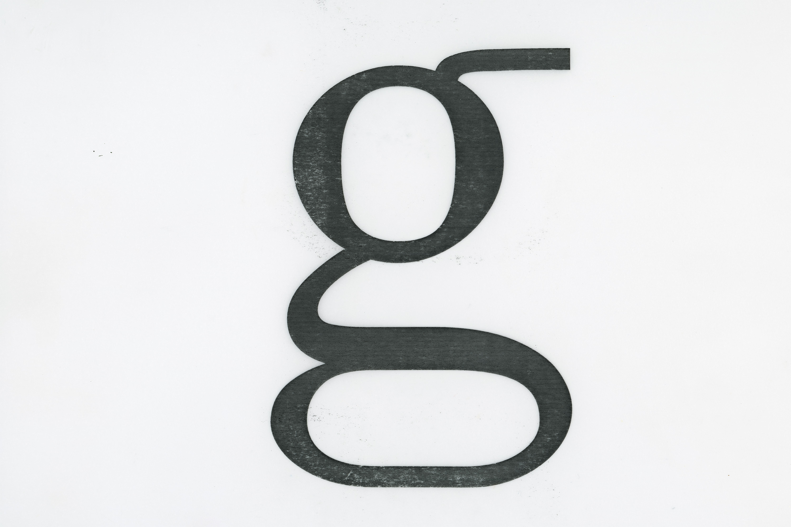
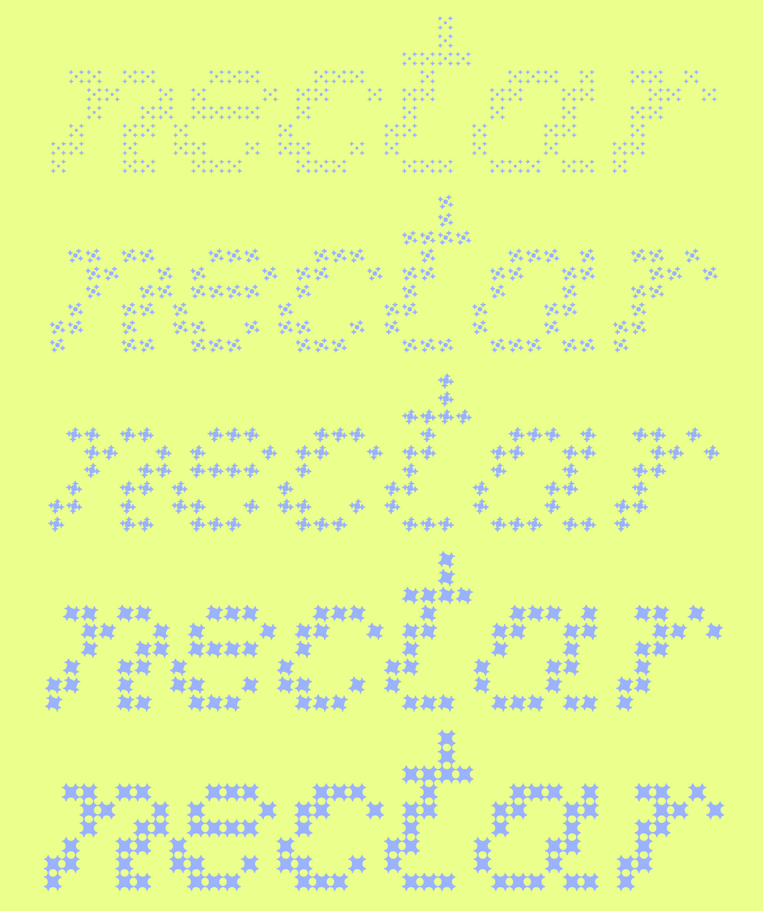
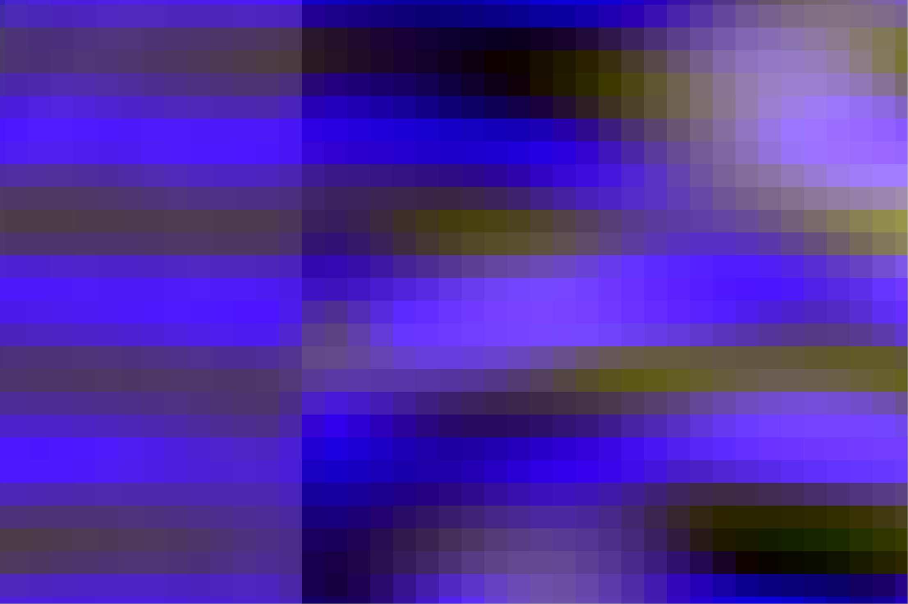
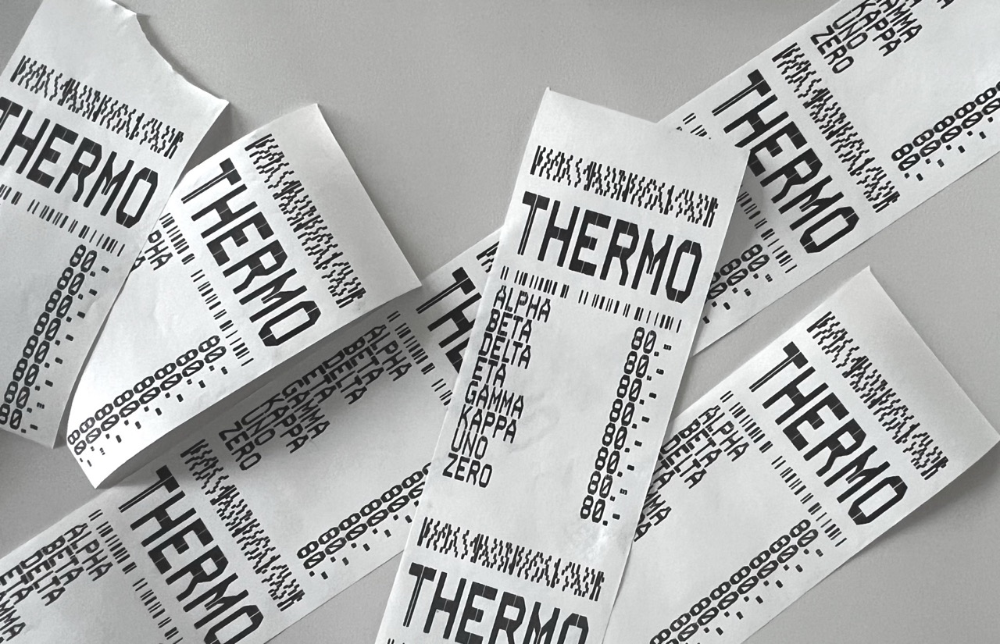
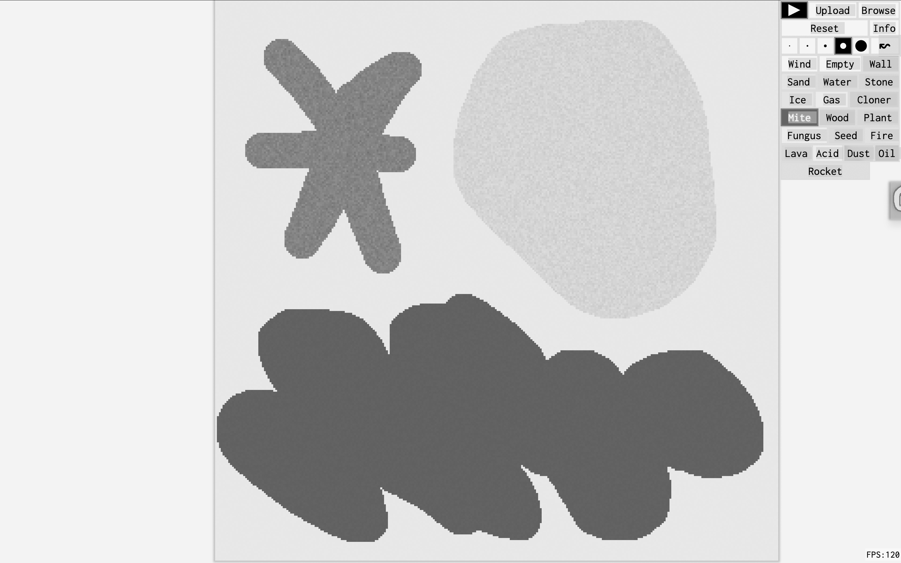
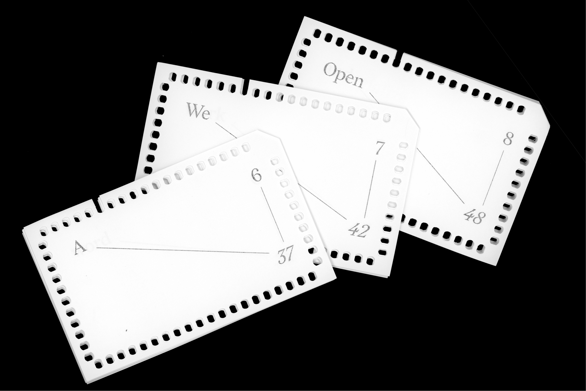

desirée solenberger
is a swiss-american designer with particular interests in interaction design / typography / material research / code / experimental design process / was an intern at Span / is graduating from the MDes Basel program / CV / linkedin / inquiries at desiree@srfam.com
A collection of thoughts / ideas / reflections / experiments / conversations / research / process work related to design
A typeface in progress with the primary concept of extra long serifs.
Glyphs
Typeface in progress
1/5
2025–26

Workshop website ↗Study of interpolation in a
component-based typeface. Type workshop led by Lena Weber.
Glyphs
Component-based variable type
2025

A study of human intervention in an AI image generation process. These models all begin with the “same” random noise field, systematically reducing noise until the image surfaces. I pulled this image in the opposite direction by increasing noise with a glitch process. Could this be an alternative image generation method, and one that involves humans in the generation process?
InvokeAI, Hexploder
Emergent Images
1/8
2025

Pen plotter, MacPaint, etc
Tools on Tour process
1/3
2025
A reminder that the physical materiality surpasses surface recreations in digital software. Thermo is a Lineto typeface inspired by receipts. I brought receipt scans into After Effects and created an endless scroll. Created in a motion workshop with ffforum.
Thermal printer, AE
Receipts in motion
1/2
2025

An InDesign script that adds visible anchor points to any typeface. Made for the Weltformat workshop by Giliane Cachin under the theme: Construction.
InDesign, Javascript
Scripting in InDesign
2025
Digital drawings from five weeks, five web tools. Created with Jules Hoogkamer and Veronica Arancibia Daes. In each session we used the same tool but explored our own theme. I visually explored: What is the balance between structure and disorder? The project tested the aesthetic variability of digital drawing tools.
Monster Mash, Supershapes, Ditherit
Collaborative drawing lab
1/5
2025


A manifesto on the hypolink as a form of publishing in the 21st century. Distributed with a mundaneum index card system. One word per card, requiring a slow, intentional linking process by the reader.
Mundaneum index system
Manifesto
1/3
2025
Authorship
Artificial aging and movement
1/5
2024